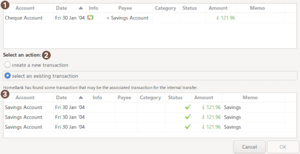

Using transfer selection dialog
 Source transaction
Source transaction
Display the transaction detail that triggered this pop-up
 Select an action
Select an action
| create a new transaction | will choose to create a new transaction and ignore the transaction proposed into the below list. |
|---|---|
| select an existing transaction | will link the actual transaction to the selected one as the transfer target. |
 Target match transaction
Target match transaction
list of transaction that may match the source transaction you just changed as a transfer.
The matching criteria are:
- currency is the same
- date +/- 2 days (since v5.3, previous was exact date match)
- amount is the same
- transaction not already a transfer